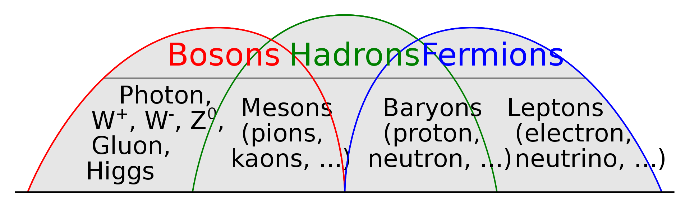

The Standard Model is a model of particle physics that scientists developed throughout the 20th century. With discovery after discovery, the pieces of the puzzle eventually came together to form one big theory of (almost) everything. Let's begin by analyzing the different classes of subatomic particles.
 Hugo Spinelli, CC0, via Wikimedia CommonsA fermion, by definition, is a particle that follows Fermi-Dirac statistics. There are 2 main classes of fermions: baryons and leptons.
Leptons themselves do not consist of deeper particles. An example of a lepton is the electron. An electron is not made up of different things, it is simply an electron, which belongs to the family of leptons.
Baryons are composite particles made from 3 quarks. There are 6 types (or flavors) of quarks:
Up quark (u)
Down quark (d)
Top quark (t)
Strange quark (s)
Charm quark (c)
Bottom quark (b)
Combinations of these quarks are called hadrons. There are two types of hadrons: mesons and baryons. Baryons are hadrons forming protons, neutrons, ... Mesons are also hadrons, because they are made of both quarks and antiquarks. Every flavor of quark has its own antiquark, the only difference being that some properties have the same magnitude but opposite sign.
This is a diagram showing every known subatomic particle. You can see that leptons (green) and quarks (purple) are under the class of the fermions. The bosons (red and yellow) are something else.
Each subatomic particle has 3 main properties, as displayed in this diagram.
Let's drift away from these particles for a bit. The electronvolt is a way of taking very small masses (in kilogram) and writing those in a different unit to make them readable. It comes from Einstein's famous E=mc², which proves that energy and mass are related and can be converted to and from eachother. c stands for the speed of light.
To understand this theorem, let's look at the nucleus of an atom. If you were to weigh this nucleus, when the neutrons and protons are stuck together, it'd way more than all of the neutrons and protons seperately. This is because that lost mass was the energy bonding the nuclei together. You can calculate this so-called mass defect by finding the bonded mass of an atom (subtract the electrons) and the mass of the seperate protons and neutrons. The difference is the mass defect. You can use E=mc² to convert this value into energy.
But, these masses are much too tiny to work with, so we'll be introducing a new unit for this.
| Name | Unit | Symbol |
|---|---|---|
| Atomic mass unit (u/Da) | Daltons | u/Da |
1u or 1Da = 1.66053906660*10^-27kg. 1u is roughly the mass of a proton/neutron, but if you want to get really specific you can look up the exact value with far decimals.
We know know how to calculate the mass defect of an atom, but how can we use this to calculate the nuclear binding energy of an atom? Well, we can convert the amount of u to joules using E=mc², but this will be a tiny amount of energy, so we will also introduce a new unit for energy.
| Name | Unit | Symbol |
|---|---|---|
| Electronvolt (eV) | Electronvolt | eV |
1 eV = 1.602176634*10-19 J. Now, let's use the speed of light and Einstein's equation to find that 1u = 931.5MeV/c². First we calculate the energy in joules: $$E=mc^{2}$$ $$E=1.66053906660⋅10^{-27}kg⋅(299 792 458\frac{m}{s})^{2}=1.49241808⋅10^{-10}Jc²$$ Now we convert this to eV and then to MeV (1 MeV = 1*10^6 eV).$$1.49241808⋅10^{-10}Jc²=\frac{1.49241808⋅10^{-10}Jc²}{1.602176634*10^{-19}\frac{J}{eV}}=931494098.920931eV=931.49\frac{MeV}{c^{2}}$$Cool. With that we have the first property of a subatomic particle, its mass.
The second property (you can see in the diagram) is electric charge.
| Name | Unit | Symbol |
|---|---|---|
| Elementary Charge (e) | / | e |
In this case, 1e = 1.602176634*10^-19C, which is coulombs! Protons have an electric charge of +1e, neutrons 0e, and electrons -1e.
Spin is the weirdest property to talk about, because it's very quantum, so it's hard to grasp. In very basic theory it is the angular momentum of a(n) (sub)atomic particle. In quantum physics, it goes a little deeper.
I mentioned before that baryons, part of the hadrons (composite particles) and also the fermions, are made of 3 quarks. Let's see how protons and neutrons are made from quarks.
Protons contain two up quarks and one down quark. The electric charge of an up quark (see diagram) is 2/3, and -1/3 for a down quark. Combining these gives a resulting charge of 1, which is accurate to the electric charge of a proton!
Next up are neutrons. Neutrons consist of one up quark and two down quarks. The total electric charge is 0, which we expected.
You may know that every subatomic particle has an antimatter counterpart. For quarks these are the antiquarks (up antiquark, charm antiquark, etc.). For leptons we have things like anti-electrons, also called positrons, as well as antineutrinos. Then there are the bosons, the odd bunch, because gluons, photons, and higgs bosons do not have a unique antiparticle. They are their own antiparticles, for as far as physics goes today. However, W and Z bosons do have antiparticles, namely W+, W-, Z+, and Z-.
If you look at our diagram, both gluons and photons have no mass, they are massless subatomic particles. Photons make up electromagnetic waves, such as light. Gluons are bosons that cause a strong nuclear force that holds quarks together. Without gluons you can't have hadrons! Neither of them have electric charges (they're neutral), which is logical, since they're a key element in working together with charged particles like quarks and electrons. Without gluons and photons the fabric of reality would fall apart.